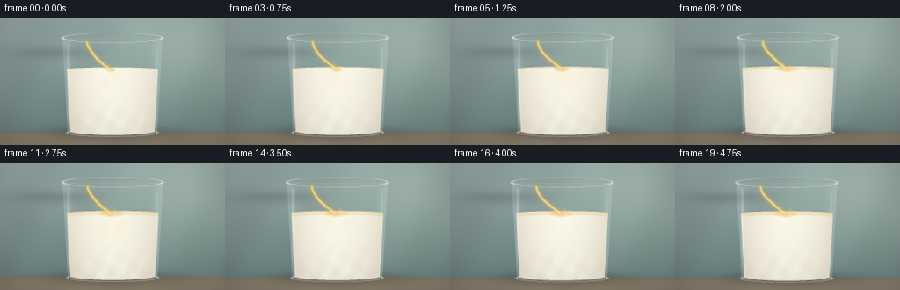
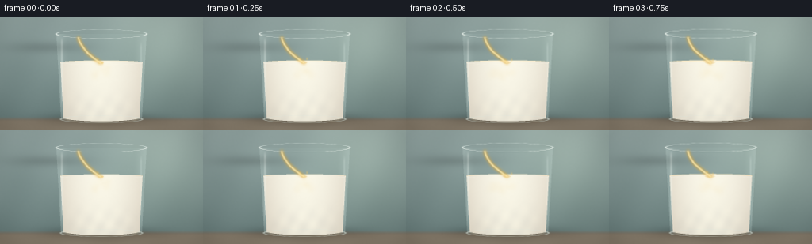
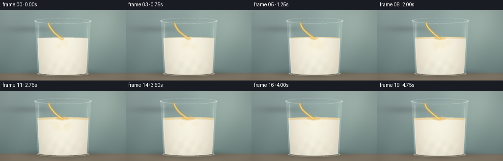
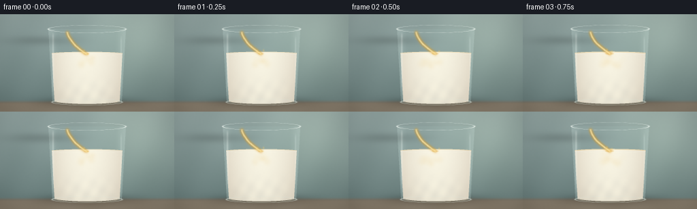

CODING AGENTS AS PIXEL WORLD MODELS
traex/DeepSeek-V4.1-Flash · material_0018
点击播放 · 原生 RGB 像素
逐轮保存的候选
回放视频、检查图与代码变化。
每份候选均可单独播放。实际图片检查记录在下方工具轨迹中。
候选 01播放与检查图
点击播放 · 原生 RGB 像素


展开代码变化
--- 上一保存版本
+++ 本次保存版本
@@ -0,0 +1,353 @@
+"""Procedural RGB renderer for: a clear glass of oil poured into milk."""
+
+from pathlib import Path
+
+import cv2
+import imageio.v2 as imageio
+import numpy as np
+
+from artifact_io import save
+
+
+W, H, N, FPS = 256, 144, 20, 4.0
+SS = 3
+RNG = np.random.default_rng(1807)
+CASE_DIR = Path(__file__).resolve().parent
+
+
+def smoothstep(edge0, edge1, value):
+ u = np.clip((value - edge0) / (edge1 - edge0), 0.0, 1.0)
+ return u * u * (3.0 - 2.0 * u)
+
+
+def over(canvas, color, alpha):
+ """Alpha composite a color or an RGB array over the canvas."""
+ a = np.asarray(alpha, dtype=np.float32)[..., None]
+ return canvas * (1.0 - a) + np.asarray(color, dtype=np.float32) * a
+
+
+def glass_profile(y):
+ """Outer and inner half-widths of the drinking glass."""
+ top, bottom = 22.0, 130.0
+ u = np.clip((y - top) / (bottom - top), 0.0, 1.0)
+ outer = 57.0 - 6.0 * u
+ return outer, outer - 3.1
+
+
+def rounded_box_mask(x, y, cx, cy, angle, half_w, half_h, power=6.0):
+ c, s = np.cos(angle), np.sin(angle)
+ u = (x - cx) * c + (y - cy) * s
+ v = -(x - cx) * s + (y - cy) * c
+ return (np.abs(u / half_w) ** power + np.abs(v / half_h) ** power) < 1.0
+
+
+def make_background(x, y):
+ """Soft photographic studio backdrop and stone table."""
+ yn = y / H
+ top = np.array([150, 169, 166], dtype=np.float32)
+ lower = np.array([104, 126, 124], dtype=np.float32)
+ bg = top * (1.0 - yn[..., None]) + lower * yn[..., None]
+
+ # Broad window light from the upper right.
+ glow = np.exp(-(((x - 205.0) / 74.0) ** 2 + ((y - 34.0) / 78.0) ** 2))
+ bg += glow[..., None] * np.array([19.0, 20.0, 15.0], dtype=np.float32)
+
+ # Table plane, with a faint reflection beneath the vessel.
+ table = smoothstep(126.0, 132.0, y)
+ table_col = np.array([139, 128, 112], dtype=np.float32)
+ table_col = table_col + (y[..., None] / H) * np.array([-10.0, -9.0, -8.0], dtype=np.float32)
+ bg = bg * (1.0 - table[..., None]) + table_col * table[..., None]
+ bg += smoothstep(130.0, 133.0, y)[..., None] * np.array([7.0, 6.0, 4.0], dtype=np.float32)
+
+ # Very restrained paper-like texture.
+ texture = (
+ 1.6 * np.sin(x * 0.091 + y * 0.037)
+ + 1.0 * np.sin(x * 0.041 - y * 0.063 + 1.2)
+ )
+ return bg + texture[..., None]
+
+
+def draw_vessel(canvas, x, y, tilt):
+ """Render the tilted clear oil vessel entering from the upper left."""
+ theta = np.deg2rad(tilt)
+ cx = 55.0 - 0.35 * (tilt - 18.0)
+ cy = 12.0 + 0.20 * (tilt - 18.0)
+ body = rounded_box_mask(x, y, cx, cy, theta, 46.0, 21.5, power=5.0)
+ inner = rounded_box_mask(x, y, cx, cy, theta, 42.6, 18.2, power=5.0)
+
+ # Soft contact shadow under the tilted glass.
+ shadow = np.exp(-(((x - 61.0) / 47.0) ** 2 + ((y - 39.0) / 7.0) ** 2))
+ canvas *= (1.0 - 0.13 * shadow[..., None])
+
+ # Refracted and slightly cool glass body.
+ glass_tint = np.array([205, 225, 218], dtype=np.float32)
+ canvas = over(canvas, glass_tint, body * 0.16)
+
+ # Oil sits level under gravity, clipped to the vessel interior.
+ oil_fill = inner & (y > 8.2)
+ oil_alpha = smoothstep(7.4, 9.0, y) * 0.64
+ oil_col = np.array([220, 160, 44], dtype=np.float32)
+ canvas = over(canvas, oil_col, oil_fill * oil_alpha)
+
+ # A bright horizontal oil meniscus inside the tilted vessel.
+ meniscus = np.exp(-((y - 8.1) / 0.85) ** 2) * inner
+ canvas = over(canvas, np.array([255, 221, 122]), meniscus * 0.62)
+
+ # Glass wall, rim, and long specular strokes.
+ edge = smoothstep(0.82, 0.985, np.maximum(
+ np.abs((x - cx) * np.cos(theta) + (y - cy) * np.sin(theta)) / 46.0,
+ np.abs(-(x - cx) * np.sin(theta) + (y - cy) * np.cos(theta)) / 21.5,
+ )) * body
+ canvas = over(canvas, np.array([242, 252, 246]), edge * 0.45)
+
+ c, s = np.cos(theta), np.sin(theta)
+ u = (x - cx) * c + (y - cy) * s
+ v = -(x - cx) * s + (y - cy) * c
+ top_stroke = np.exp(-((v + 15.2) / 1.25) ** 2) * (np.abs(u) < 42.5)
+ low_stroke = np.exp(-((v - 16.1) / 0.9) ** 2) * (np.abs(u) < 39.5)
+ canvas = over(canvas, np.array([252, 255, 247]), top_stroke * 0.52)
+ canvas = over(canvas, np.array([221, 240, 233]), low_stroke * 0.32)
+
+ # End face of the vessel, with an amber lip at the pour point.
+ end_q = ((u - 45.0) / 2.4) ** 2 + (v / 17.5) ** 2
+ end_glass = smoothstep(0.78, 1.04, end_q) * (end_q < 1.3)
+ canvas = over(canvas, np.array([239, 252, 246]), end_glass * 0.33)
+ lip = np.exp(-(((x - 98.5) / 3.3) ** 2 + ((y - 26.0) / 1.7) ** 2))
+ canvas = over(canvas, np.array([255, 224, 132]), lip * 0.58)
+
+
+def draw_stream(canvas, x, y, t, source, impact):
+ """Lay down the thin, glassy oil ribbon and its moving highlights."""
+ p0 = np.array(source, dtype=np.float32)
+ p1 = np.array(impact, dtype=np.float32)
+ ys = np.linspace(p0[1], p1[1], 100)
+ s = (ys - p0[1]) / max(p1[1] - p0[1], 1.0)
+ xs = p0[0] + (p1[0] - p0[0]) * s ** 1.65
+ xs += 0.55 * np.sin(2.0 * np.pi * s + t * 2.1) * np.sin(np.pi * s)
+
+ ribbon = np.zeros((H * SS, W * SS), dtype=np.uint8)
+ center = np.zeros_like(ribbon)
+ pts = np.stack([xs * SS, ys * SS], axis=1).round().astype(np.int32)
+ cv2.polylines(ribbon, [pts], False, 255, max(2, int(3.1 * SS)), cv2.LINE_AA)
+ cv2.polylines(center, [pts], False, 255, max(1, int(1.05 * SS)), cv2.LINE_AA)
+
+ outer = cv2.GaussianBlur(ribbon.astype(np.float32) / 255.0, (0, 0), 1.7 * SS)
+ core = cv2.GaussianBlur(center.astype(np.float32) / 255.0, (0, 0), 0.55 * SS)
+ outer *= smoothstep(0.0, 0.22, s[None, :].mean())
+ canvas = over(canvas, np.array([229, 174, 60]), outer * 0.76)
+ canvas = over(canvas, np.array([255, 239, 181]), core * 0.80)
+
+ # Sliding glints make the clear stream read as liquid rather than wire.
+ for k in range(5):
+ q = (k / 5.0 + t * 0.31) % 1.0
+ yi = p0[1] + (p1[1] - p0[1]) * q
+ xi = np.interp(yi, ys, xs)
+ glint = np.exp(-(((x - xi + 0.55) / 0.55) ** 2 + ((y - yi) / 1.05) ** 2))
+ canvas = over(canvas, np.array([255, 249, 217]), glint * (0.45 * (0.4 + 0.6 * q)))
+
+ # A restrained droplet or two at the impact point.
+ for k in range(2):
+ phase = (t * 1.6 + 0.34 * k) % 1.0
+ dx = impact[0] + (-1) ** k * (2.2 + 4.0 * phase)
+ dy = impact[1] - 5.0 * np.sin(np.pi * phase) - 0.8 * phase
+ drop = np.exp(-(((x - dx) / 1.15) ** 2 + ((y - dy) / 1.65) ** 2))
+ canvas = over(canvas, np.array([245, 202, 105]), drop * 0.42)
+ return canvas
+
+
+def particle_centers(t):
+ """Oil parcels spread from the impact, curl downward, then refloat."""
+ rng = np.random.default_rng(441)
+ centers = []
+ for i in range(38):
+ side = -1.0 if i % 2 else 1.0
+ spread = 8.0 + 20.0 * rng.random()
+ depth = 6.0 + 18.0 * rng.random()
+ delay = -1.05 + 3.2 * rng.random()
+ life = 1.8 + 1.7 * rng.random()
+ phase = 2.0 * np.pi * rng.random()
+ p = np.clip((t - delay) / life, 0.0, 1.0)
+ if t < delay or p >= 1.0:
+ continue
+ x = 127.0 + side * (2.0 + spread * p) + 3.2 * np.sin(2.5 * p + phase)
+ y = 56.5 + 1.5 * p + depth * np.sin(np.pi * p) * (1.0 - 0.28 * p)
+ y += 1.4 * np.sin(2.0 * np.pi * p + phase)
+ alpha = np.sin(np.pi * min(1.0, p * 1.12)) ** 0.7
+ centers.append((x, y, 2.3 + 2.0 * rng.random(), alpha, i))
+ return centers
+
+
+def draw_oil_dynamics(canvas, x, y, t, inside, surface_y):
+ """Milk/oil interface, suspended oil curls, ripples, and top lens."""
+ progress = np.clip(t / 4.4, 0.0, 1.0)
+ dx = (x - 128.0) / 54.0
+ top_edge = surface_y - 2.6 * np.sqrt(np.clip(1.0 - dx * dx, 0.0, 1.0))
+
+ # The oil layer thickens and slowly lifts the apparent milk level.
+ thickness = 0.35 + 4.0 * smoothstep(0.0, 0.72, progress)
+ band = smoothstep(top_edge - 0.35, top_edge + 0.55, y)
+ band *= 1.0 - smoothstep(top_edge + thickness - 0.45, top_edge + thickness + 0.8, y)
+ band *= inside
+ canvas = over(canvas, np.array([229, 180, 73]), band * 0.24)
+
+ # Suspended oil, accumulated as soft density rather than hard discs.
+ density = np.zeros((H * SS, W * SS), dtype=np.float32)
+ for px, py, radius, alpha, index in particle_centers(t):
+ for trail, fade in ((0.00, 1.0), (0.065, 0.42), (0.125, 0.18)):
+ q = np.clip((t - (-1.05 + (index * 0.083)) ) / 2.6 - trail, 0.0, 1.0)
+ # A tiny trailing bend gives each parcel a liquid-like wake.
+ tx = px - np.sign(px - 128.0) * 1.1 * fade
+ ty = py + 0.8 * fade
+ c = (int(round(tx * SS)), int(round(ty * SS)))
+ r = max(1, int(round(radius * SS * (1.0 - 0.12 * fade))))
+ cv2.circle(density, c, r, float(alpha * fade), -1, cv2.LINE_AA)
+ density = cv2.GaussianBlur(density, (0, 0), 2.5 * SS)
+ density = np.clip(density, 0.0, 1.0) * inside
+ canvas = over(canvas, np.array([235, 184, 75]), density * 0.27)
+
+ # Fine cream-colored filaments at the leading edge of the plume.
+ filament = np.clip(density * (0.65 + 0.35 * np.sin(y * 0.72 + t * 4.0)), 0.0, 1.0)
+ canvas = over(canvas, np.array([255, 245, 211]), filament * 0.13)
+
+ # Expanding impact ripples on the elliptical liquid surface.
+ for k in range(3):
+ age = (t * 1.28 + k / 3.0) % 1.0
+ rx = 3.0 + 17.0 * age
+ ry = 0.65 + 2.0 * age
+ q = ((x - 127.0) / rx) ** 2 + ((y - (surface_y + 0.8)) / ry) ** 2
+ ring = np.exp(-((q - 1.0) / 0.055) ** 2) * (1.0 - age) * inside
+ canvas = over(canvas, np.array([255, 251, 228]), ring * 0.22)
+
+ # Central oil lens: warm rim, clear interior, and a cool reflected glint.
+ lens_rx = 4.0 + 10.5 * smoothstep(0.0, 0.55, progress)
+ lens_ry = 1.1 + 2.6 * smoothstep(0.0, 0.55, progress)
+ lens_q = ((x - 127.0) / lens_rx) ** 2 + ((y - (surface_y + 0.4)) / lens_ry) ** 2
+ lens = (1.0 - smoothstep(0.72, 1.02, lens_q)) * inside
+ rim = np.exp(-((lens_q - 1.0) / 0.075) ** 2) * inside
+ canvas = over(canvas, np.array([218, 162, 52]), lens * 0.20)
+ canvas = over(canvas, np.array([255, 219, 116]), rim * 0.34)
+ glint = np.exp(-(((x - 123.5) / (0.45 + 0.12 * lens_rx)) ** 2 + ((y - surface_y + 0.6) / 0.55) ** 2))
+ canvas = over(canvas, np.array([255, 249, 218]), glint * 0.40)
+ return canvas
+
+
+def render_frame(frame_index):
+ t = frame_index / FPS
+ yy, xx = np.mgrid[0:H * SS, 0:W * SS].astype(np.float32)
+ x = (xx + 0.5) / SS
+ y = (yy + 0.5) / SS
+
+ canvas = make_background(x, y)
+ surface_y = 58.2 - 1.15 * smoothstep(0.0, 0.85, t / 4.4)
+
+ # Table shadow and faint colored transmission beneath the glass.
+ shadow = np.exp(-(((x - 128.0) / 61.0) ** 2 + ((y - 130.0) / 7.2) ** 2))
+ canvas *= (1.0 - 0.34 * shadow[..., None])
+ caustic = np.exp(-(((x - 132.0) / 43.0) ** 2 + ((y - 132.0) / 4.3) ** 2))
+ canvas += caustic[..., None] * np.array([17.0, 13.0, 8.0], dtype=np.float32)
+
+ outer_hw, inner_hw = glass_profile(y)
+ body = (y >= 22.0) & (y <= 130.0) & (np.abs(x - 128.0) <= outer_hw)
+ bottom_cap = ((x - 128.0) / outer_hw) ** 2 + ((y - 129.0) / 6.4) ** 2 <= 1.0
+ bottom_cap &= y >= 124.0
+ glass = body | bottom_cap
+ inner = (y >= 22.5) & (y <= 129.2) & (np.abs(x - 128.0) <= inner_hw)
+ inner |= (((x - 128.0) / np.maximum(inner_hw, 1.0)) ** 2 + ((y - 128.0) / 4.7) ** 2 <= 1.0) & (y >= 124.5)
+
+ # Refractive glass above the milk.
+ canvas = over(canvas, np.array([193, 221, 216]), glass * 0.075)
+ wall_glow = smoothstep(0.72, 1.0, np.abs(x - 128.0) / np.maximum(outer_hw, 1.0)) * body
+ canvas = over(canvas, np.array([226, 243, 237]), wall_glow * 0.17)
+
+ # Opaque, softly lit milk. Its meniscus is elliptical because of perspective.
+ surface_lift = 2.6 * np.sqrt(np.clip(1.0 - ((x - 128.0) / 54.0) ** 2, 0.0, 1.0))
+ liquid = inner & (y >= surface_y - surface_lift)
+ edge = np.clip(np.abs(x - 128.0) / np.maximum(inner_hw, 1.0), 0.0, 1.0)
+ depth = np.clip((y - surface_y) / 72.0, 0.0, 1.0)
+ milk = np.empty((H * SS, W * SS, 3), dtype=np.float32)
+ milk[..., 0] = 248.0 - 15.0 * edge ** 2 - 5.0 * depth
+ milk[..., 1] = 246.0 - 20.0 * edge ** 2 - 6.0 * depth
+ milk[..., 2] = 233.0 - 22.0 * edge ** 2 - 7.0 * depth
+ milk += (1.0 - edge[..., None] * 0.65) * np.array([4.0, 3.0, 1.0], dtype=np.float32)
+
+ # Soft light caustics at the lower part of the glass.
+ caustic_lines = (
+ np.sin(x * 0.31 + y * 0.17 + 1.1)
+ + 0.7 * np.sin(x * 0.19 - y * 0.23 + 2.7)
+ )
+ caustic_weight = smoothstep(83.0, 124.0, y) * (1.0 - edge ** 3)
+ milk += (caustic_lines * caustic_weight)[..., None] * np.array([3.4, 3.2, 2.4], dtype=np.float32)
+ canvas = over(canvas, milk, liquid * 0.985)
+
+ # Bright front half of the milk meniscus.
+ q_surface = ((x - 128.0) / 54.2) ** 2 + ((y - surface_y) / 2.8) ** 2
+ meniscus_ring = np.exp(-((q_surface - 1.0) / 0.06) ** 2) * (y >= surface_y - 0.5) * inner
+ canvas = over(canvas, np.array([255, 252, 238]), meniscus_ring * 0.50)
+
+ canvas = draw_oil_dynamics(canvas, x, y, t, liquid, surface_y)
+
+ # Glass rim and base: thin cool-white arcs and warm refracted lower edge.
+ rim_q = ((x - 128.0) / 57.0) ** 2 + ((y - 22.0) / 5.6) ** 2
+ rim = np.exp(-((rim_q - 1.0) / 0.045) ** 2)
+ rim *= (rim_q > 0.82) & (rim_q < 1.18)
+ canvas = over(canvas, np.array([238, 250, 244]), rim * 0.72)
+ front_rim = np.exp(-((rim_q - 1.0) / 0.036) ** 2) * (y > 21.5)
+ canvas = over(canvas, np.array([255, 255, 247]), front_rim * 0.43)
+
+ base_q = ((x - 128.0) / 51.5) ** 2 + ((y - 130.0) / 4.8) ** 2
+ base_edge = np.exp(-((base_q - 1.0) / 0.055) ** 2)
+ canvas = over(canvas, np.array([224, 238, 230]), base_edge * 0.58)
+ base_inner = np.exp(-((base_q - 0.74) / 0.10) ** 2) * (y > 128.5)
+ canvas = over(canvas, np.array([255, 241, 207]), base_inner * 0.20)
+
+ # Long vertical specular strips, kept asymmetrical and soft.
+ left_strip = np.exp(-((x - 78.0) / 1.35) ** 2) * smoothstep(25.0, 34.0, y) * (1.0 - smoothstep(96.0, 124.0, y))
+ right_strip = np.exp(-((x - 178.0) / 0.95) ** 2) * smoothstep(30.0, 40.0, y) * (1.0 - smoothstep(88.0, 122.0, y))
+ canvas = over(canvas, np.array([242, 252, 246]), left_strip * 0.33)
+ canvas = over(canvas, np.array([235, 249, 243]), right_strip * 0.22)
+
+ # Pouring vessel and stream sit in front of the backdrop and glass.
+ tilt = 17.0 + 4.2 * smoothstep(0.0, 0.9, t / 4.4)
+ draw_vessel(canvas, x, y, tilt)
+ source = (98.8 + 0.5 * np.sin(t * 0.8), 26.8)
+ impact = (127.0 + 0.55 * np.sin(t * 1.7), surface_y + 0.6)
+ canvas = draw_stream(canvas, x, y, t, source, impact)
+
+ # Gentle studio vignette and fine, stable film grain.
+ radial = ((x - 128.0) / 160.0) ** 2 + ((y - 72.0) / 105.0) ** 2
+ canvas *= (1.0 - 0.13 * np.clip(radial, 0.0, 1.0))[..., None]
+ grain = RNG.normal(0.0, 1.0, (H * SS, W * SS)).astype(np.float32)
+ grain = cv2.GaussianBlur(grain, (0, 0), 0.55 * SS)
+ canvas += grain[..., None] * 1.5
+
+ canvas = np.clip(canvas, 0.0, 255.0)
+ small = cv2.resize(canvas, (W, H), interpolation=cv2.INTER_AREA)
+
+ # A nearly imperceptible push-in gives the still life a filmed quality.
+ zoom = 1.0 + 0.010 * (frame_index / (N - 1))
+ tx = 0.75 * np.sin(frame_index * 0.24)
+ ty = -0.45 * np.sin(frame_index * 0.19)
+ matrix = cv2.getRotationMatrix2D((W / 2.0, H / 2.0), 0.0, zoom)
+ matrix[0, 2] += tx
+ matrix[1, 2] += ty
+ small = cv2.warpAffine(small, matrix, (W, H), flags=cv2.INTER_CUBIC, borderMode=cv2.BORDER_REFLECT_101)
+ return np.clip(small + 0.35, 0.0, 255.0).astype(np.uint8)
+
+
+def main():
+ frames = np.stack([render_frame(i) for i in range(N)], axis=0)
+ save(frames, CASE_DIR)
+ imageio.mimsave(
+ CASE_DIR / "video.mp4",
+ frames,
+ fps=FPS,
+ codec="libx264",
+ quality=9,
+ macro_block_size=1,
+ pixelformat="yuv420p",
+ )
+ print(f"Wrote {N} frames, {W}x{H} at {FPS:g} fps to {CASE_DIR}")
+
+
+if __name__ == "__main__":
+ main()
候选 02播放与检查图
点击播放 · 原生 RGB 像素


展开代码变化
--- 上一保存版本
+++ 本次保存版本
@@ -85,13 +85,13 @@
# Oil sits level under gravity, clipped to the vessel interior.
oil_fill = inner & (y > 8.2)
- oil_alpha = smoothstep(7.4, 9.0, y) * 0.64
- oil_col = np.array([220, 160, 44], dtype=np.float32)
+ oil_alpha = smoothstep(7.4, 9.0, y) * 0.88
+ oil_col = np.array([235, 166, 35], dtype=np.float32)
canvas = over(canvas, oil_col, oil_fill * oil_alpha)
# A bright horizontal oil meniscus inside the tilted vessel.
meniscus = np.exp(-((y - 8.1) / 0.85) ** 2) * inner
- canvas = over(canvas, np.array([255, 221, 122]), meniscus * 0.62)
+ canvas = over(canvas, np.array([255, 228, 127]), meniscus * 0.78)
# Glass wall, rim, and long specular strokes.
edge = smoothstep(0.82, 0.985, np.maximum(
@@ -112,8 +112,8 @@
end_q = ((u - 45.0) / 2.4) ** 2 + (v / 17.5) ** 2
end_glass = smoothstep(0.78, 1.04, end_q) * (end_q < 1.3)
canvas = over(canvas, np.array([239, 252, 246]), end_glass * 0.33)
- lip = np.exp(-(((x - 98.5) / 3.3) ** 2 + ((y - 26.0) / 1.7) ** 2))
- canvas = over(canvas, np.array([255, 224, 132]), lip * 0.58)
+ lip = np.exp(-(((x - 99.0) / 4.6) ** 2 + ((y - 26.0) / 2.2) ** 2))
+ canvas = over(canvas, np.array([255, 223, 121]), lip * 0.72)
def draw_stream(canvas, x, y, t, source, impact):
@@ -134,7 +134,7 @@
outer = cv2.GaussianBlur(ribbon.astype(np.float32) / 255.0, (0, 0), 1.7 * SS)
core = cv2.GaussianBlur(center.astype(np.float32) / 255.0, (0, 0), 0.55 * SS)
outer *= smoothstep(0.0, 0.22, s[None, :].mean())
- canvas = over(canvas, np.array([229, 174, 60]), outer * 0.76)
+ canvas = over(canvas, np.array([220, 159, 43]), outer * 0.88)
canvas = over(canvas, np.array([255, 239, 181]), core * 0.80)
# Sliding glints make the clear stream read as liquid rather than wire.
@@ -188,7 +188,7 @@
band = smoothstep(top_edge - 0.35, top_edge + 0.55, y)
band *= 1.0 - smoothstep(top_edge + thickness - 0.45, top_edge + thickness + 0.8, y)
band *= inside
- canvas = over(canvas, np.array([229, 180, 73]), band * 0.24)
+ canvas = over(canvas, np.array([222, 164, 50]), band * 0.31)
# Suspended oil, accumulated as soft density rather than hard discs.
density = np.zeros((H * SS, W * SS), dtype=np.float32)
@@ -203,11 +203,11 @@
cv2.circle(density, c, r, float(alpha * fade), -1, cv2.LINE_AA)
density = cv2.GaussianBlur(density, (0, 0), 2.5 * SS)
density = np.clip(density, 0.0, 1.0) * inside
- canvas = over(canvas, np.array([235, 184, 75]), density * 0.27)
+ canvas = over(canvas, np.array([225, 164, 48]), density * 0.41)
# Fine cream-colored filaments at the leading edge of the plume.
filament = np.clip(density * (0.65 + 0.35 * np.sin(y * 0.72 + t * 4.0)), 0.0, 1.0)
- canvas = over(canvas, np.array([255, 245, 211]), filament * 0.13)
+ canvas = over(canvas, np.array([255, 241, 190]), filament * 0.19)
# Expanding impact ripples on the elliptical liquid surface.
for k in range(3):
@@ -224,8 +224,8 @@
lens_q = ((x - 127.0) / lens_rx) ** 2 + ((y - (surface_y + 0.4)) / lens_ry) ** 2
lens = (1.0 - smoothstep(0.72, 1.02, lens_q)) * inside
rim = np.exp(-((lens_q - 1.0) / 0.075) ** 2) * inside
- canvas = over(canvas, np.array([218, 162, 52]), lens * 0.20)
- canvas = over(canvas, np.array([255, 219, 116]), rim * 0.34)
+ canvas = over(canvas, np.array([216, 151, 37]), lens * 0.27)
+ canvas = over(canvas, np.array([255, 213, 94]), rim * 0.40)
glint = np.exp(-(((x - 123.5) / (0.45 + 0.12 * lens_rx)) ** 2 + ((y - surface_y + 0.6) / 0.55) ** 2))
canvas = over(canvas, np.array([255, 249, 218]), glint * 0.40)
return canvas
@@ -255,7 +255,7 @@
inner |= (((x - 128.0) / np.maximum(inner_hw, 1.0)) ** 2 + ((y - 128.0) / 4.7) ** 2 <= 1.0) & (y >= 124.5)
# Refractive glass above the milk.
- canvas = over(canvas, np.array([193, 221, 216]), glass * 0.075)
+ canvas = over(canvas, np.array([181, 214, 209]), glass * 0.105)
wall_glow = smoothstep(0.72, 1.0, np.abs(x - 128.0) / np.maximum(outer_hw, 1.0)) * body
canvas = over(canvas, np.array([226, 243, 237]), wall_glow * 0.17)
@@ -265,9 +265,9 @@
edge = np.clip(np.abs(x - 128.0) / np.maximum(inner_hw, 1.0), 0.0, 1.0)
depth = np.clip((y - surface_y) / 72.0, 0.0, 1.0)
milk = np.empty((H * SS, W * SS, 3), dtype=np.float32)
- milk[..., 0] = 248.0 - 15.0 * edge ** 2 - 5.0 * depth
- milk[..., 1] = 246.0 - 20.0 * edge ** 2 - 6.0 * depth
- milk[..., 2] = 233.0 - 22.0 * edge ** 2 - 7.0 * depth
+ milk[..., 0] = 246.0 - 15.0 * edge ** 2 - 5.0 * depth
+ milk[..., 1] = 243.0 - 20.0 * edge ** 2 - 6.0 * depth
+ milk[..., 2] = 228.0 - 22.0 * edge ** 2 - 7.0 * depth
milk += (1.0 - edge[..., None] * 0.65) * np.array([4.0, 3.0, 1.0], dtype=np.float32)
# Soft light caustics at the lower part of the glass.
可观测工具轨迹
实际执行的命令与返回图片。
命令 1exit 0
/bin/bash -c "sed -n '1,240p' prompt.txt"
命令 2exit 0
/bin/bash -c "sed -n '1,280p' GENERATION_RULES.md"
命令 3exit 0
/bin/bash -c 'cat task_spec.json'
命令 4exit 1
/bin/bash -c "printf '%s\\n' '--- files ---'; rg --files -g '"'!*.mp4'"' -g '"'!*.mov'"' | sed -n '1,240p'; printf '%s\\n' '--- tooling ---'; command -v ffmpeg; command -v python3; command -v blender; command -v convert; command -v magick"
命令 5exit 0
/bin/bash -c "sed -n '1,280p' artifact_io.py"
命令 6exit 0
/bin/bash -c "python3 - <<'PY'
mods=['numpy','PIL','cv2','imageio','imageio_ffmpeg','scipy','skimage']
for m in mods:
try:
mod=__import__(m)
print(m, 'OK', getattr(mod,'__version__',''))
except Exception as e:
print(m, 'NO', type(e).__name__, str(e)[:80])
PY"命令 7exit 0
/bin/bash -c "find /usr /opt -type f \\( -name ffmpeg -o -name 'ffmpeg-*' \\) 2>/dev/null | head -20"
命令 8exit 1
/bin/bash -c 'python3 -m py_compile generate.py && python3 generate.py'
命令 9exit 1
/bin/bash -c 'python3 generate.py'
命令 10exit 0
/bin/bash -c 'python3 generate.py'
命令 11exit 0
/bin/bash -c "python3 - <<'PY'
from PIL import Image
import numpy as np
im=Image.open('inspection.png').convert('RGB')
print('inspection',im.size)
# Character map of frame 19, gamma-compressed luminance.
a=np.array(Image.open('frames/19.png').convert('RGB'),dtype=np.float32)/255
lum=(0.2126*a[:,:,0]+0.7152*a[:,:,1]+0.0722*a[:,:,2])**(1/1.5)
# 2 px wide chars, 4 px high rows => 128x36
lum=Image.fromarray((lum*255).astype('uint8')).resize((128,36),Image.Resampling.BOX)
chars=' .:-=+*#%@'
p=np.array(lum)
for row in p:
print(''.join(chars[min(len(chars)-1,int(v)*(len(chars)-1)//256)] for v in row))
PY"命令 12exit 0
/bin/bash -c "python3 - <<'PY'
from PIL import Image
import numpy as np
for f in [0,4,9,14,19]:
a=np.array(Image.open(f'frames/{f:02d}.png'))
print(f, 'mean',np.round(a.mean((0,1)),1),'range',a.min(),a.max(),'unique',len(np.unique(a.reshape(-1,3),axis=0)))
PY
ffmpeg_bin="'$(python3 -c '"'import imageio_ffmpeg; print(imageio_ffmpeg.get_ffmpeg_exe())')
\""'$ffmpeg_bin" -hide_banner -loglevel error -i video.mp4 -vf "select='"'eq(n,0)+eq(n,9)+eq(n,19)',scale=768:432:flags=neighbor,tile=3x1\" -frames:v 1 .tmp/contact.png
ls -lh video.mp4 pixels.npz inspection.png .tmp/contact.png"命令 13exit 0
/bin/bash -c "python3 - <<'PY'
from PIL import Image
import numpy as np
for f in [0,10,19]:
im=Image.open(f'frames/{f:02d}.png').resize((768,432),Image.Resampling.NEAREST)
im.save(f'.tmp/frame_{f:02d}.png')
a=np.array(im)
# foreground columns with amber/yellow content
r,g,b=a[:,:,0].astype(float),a[:,:,1].astype(float),a[:,:,2].astype(float)
warm=(r-b>25)&(g-b>10)
print(f,'warm pixels',warm.sum(),'bbox', (np.where(warm)[1].min(),np.where(warm)[0].min(),np.where(warm)[1].max(),np.where(warm)[0].max()) if warm.any() else None)
PY"命令 14exit 1
/bin/bash -c "mkdir -p .tmp/pass1 && cp video.mp4 pixels.npz inspection.png transition_check.png .tmp/pass1/ && cp -r frames .tmp/pass1/frames
python3 - <<'PY'
from PIL import Image
import numpy as np
im=Image.open('frames/19.png').convert('RGB')
a=np.array(im)
# coarsen 2x2, then classify by hue and luminance
a=a.reshape(72,2,128,2,3).mean((1,3))
r,g,b=a[:,:,0],a[:,:,1],a[:,:,2]
lum=(r+g+b)/3
mx=a.max(2); mn=a.min(2); sat=(mx-mn)/np.maximum(mx,1)
out=[]
for y in range(72):
s=''
for x in range(128):
if y>63 and b>r-8: ch='.'
elif sat[y,x]>.16 and r[y,x]>g[y,x]>b[y,x]: ch='O'
elif lum[y,x]>205: ch='#'
elif lum[y,x]>175: ch='W'
elif lum[y,x]>145: ch='+'
elif lum[y,x]>115: ch='-'
else: ch=' '
s+=ch
out.append(s)
print('\\n'.join(out))
PY"命令 15exit 1
/bin/bash -c "python3 - <<'PY'
from PIL import Image
import numpy as np
frames=np.stack([np.array(Image.open(f'frames/{i:02d}.png'),dtype=np.int16) for i in range(20)])
for i in range(1,20):
d=np.abs(frames[i]-frames[i-1])
print(i,round(float(d.mean()),3),round(float((d>3).mean()*100),2),round(float(d.max()),0))
# image map hue classification
im=Image.open('frames/19.png').convert('RGB')
a=np.array(im.resize((128,72),Image.Resampling.BOX),dtype=float)
r,g,b=a[:,:,0],a[:,:,1],a[:,:,2]
lum=(r+g+b)/3
mx=a.max(2); mn=a.min(2); sat=(mx-mn)/np.maximum(mx,1)
for y in range(72):
s=''
for x in range(128):
if y>63 and b>r-8: ch='.'
elif sat[y,x]>.16 and r[y,x]>g[y,x]>b[y,x]: ch='O'
elif lum[y,x]>205: ch='#'
elif lum[y,x]>175: ch='W'
elif lum[y,x]>145: ch='+'
elif lum[y,x]>115: ch='-'
else: ch=' '
s+=ch
print(s)
PY"命令 16exit 0
/bin/bash -c "python3 - <<'PY'
from PIL import Image
import numpy as np
for i in [0,10,19]:
a=np.array(Image.open(f'frames/{i:02d}.png').convert('RGB'),dtype=float)
r,g,b=a[:,:,0],a[:,:,1],a[:,:,2]
for name,m in [('vessel',(slice(0,55),slice(20,115))),('stream',(slice(20,60),slice(90,140))),('liquid',(slice(55,130),slice(72,184))),('plume',(slice(55,95),slice(80,176)))]:
z=a[m]; rr,gg,bb=z[:,:,0],z[:,:,1],z[:,:,2]
print(i,name,'mean',np.round(z.mean((0,1)),1),'warm%',round(100*((rr-bb>20)&(gg-bb>8)).mean(),2),'contrast',round(z.std(),1))
PY"命令 17exit 0
/bin/bash -c "python3 - <<'PY'
from PIL import Image
import numpy as np
for f in [0,10,19]:
a=np.array(Image.open(f'frames/{f:02d}.png'),dtype=float)
r,g,b=a[...,0],a[...,1],a[...,2]
warm=(r-b>18)&(g-b>8)&(r>110)
for name,m in [('vessel_region',(slice(0,55),slice(10,115))),('glass_upper',(slice(22,58),slice(70,186))),('plume_region',(slice(58,100),slice(76,180))),('lower_milk',(slice(80,126),slice(78,178)))]:
msk=warm[m]; ys,xs=np.where(msk)
if len(xs): print(f,name,len(xs),'bbox',(xs.min()+m[1].start,ys.min()+m[0].start,xs.max()+m[1].start,ys.max()+m[0].start))
else: print(f,name,0)
PY"命令 18exit 0
/bin/bash -c 'python3 generate.py'
命令 19exit 0
/bin/bash -c "python3 - <<'PY'
from PIL import Image
import numpy as np
frames=np.stack([np.array(Image.open(f'frames/{i:02d}.png'),dtype=np.int16) for i in range(20)])
print('frame shape',frames.shape)
for i in [0,10,19]:
a=frames[i].astype(float); r,g,b=a[...,0],a[...,1],a[...,2]
for name,m in [('vessel',(slice(0,55),slice(10,115))),('stream',(slice(20,60),slice(90,140))),('plume',(slice(58,100),slice(76,180)))]:
z=a[m]; rr,gg,bb=z[:,:,0],z[:,:,1],z[:,:,2]
print(i,name,'warm%',round(100*((rr-bb>20)&(gg-bb>8)).mean(),1),'contrast',round(z.std(),1))
for i in range(1,20):
d=np.abs(frames[i]-frames[i-1])
print('delta',i,round(float(d.mean()),3),round(float((d>3).mean()*100),2))
# Verify exact artifacts and MP4 metadata.
import subprocess, imageio_ffmpeg
ff=imageio_ffmpeg.get_ffmpeg_exe()
p=subprocess.run([ff,'-hide_banner','-i','video.mp4'],capture_output=True,text=True)
for line in p.stderr.splitlines():
if 'Video:' in line or 'Duration:' in line: print(line.strip())
PY"命令 20exit 0
/bin/bash -c 'command -v chafa || true; command -v viu || true; command -v img2txt || true; command -v jp2 || true; git status --short'
命令 21exit 0
/bin/bash -c "python3 - <<'PY'
from pathlib import Path
import json, hashlib
import numpy as np
from PIL import Image
p=Path('.')
spec=json.loads((p/'task_spec.json').read_text())
frames=np.stack([np.array(Image.open(p/'frames'/f'{i:02d}.png')) for i in range(spec['frames'])])
assert frames.shape==(spec['frames'],spec['height'],spec['width'],3)
assert frames.dtype==np.uint8
z=np.load(p/'pixels.npz')['pixels']
assert z.shape==(spec['height'],spec['width'],spec['frames'])
# Repack the RGB PNGs and ensure the exported delta stream is byte-for-byte equivalent.
v=frames.astype(np.uint32)
packed=(v[:,:,:,0]<<16)|(v[:,:,:,1]<<8)|v[:,:,:,2]
assert np.array_equal(packed.transpose(1,2,0),z)
html=(p/'index.html').read_text()
assert '__DATA__' not in html and '__ID__' not in html and 'data:video' not in html
print('frames_ok',frames.shape,'pixels_ok',z.shape,'html_bytes',len(html))
print('frame_hashes',*[hashlib.sha256((p/'frames'/f'{i:02d}.png').read_bytes()).hexdigest()[:10] for i in [0,9,19]])
PY
python3 -m py_compile generate.py
ls -lh generate.py video.mp4 pixels.npz index.html inspection.png transition_check.png frames/00.png frames/19.png"保存候选 2 份；完成命令 21 次；可验证图片返回 0 张。原始 API 响应与完整日志保留在本地。